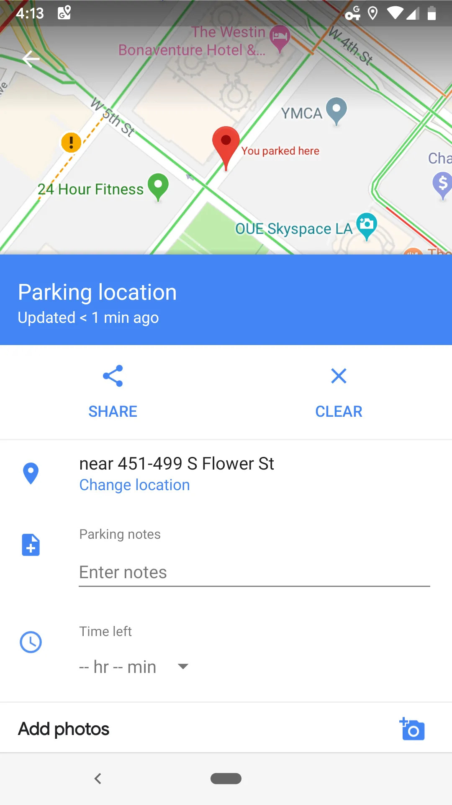
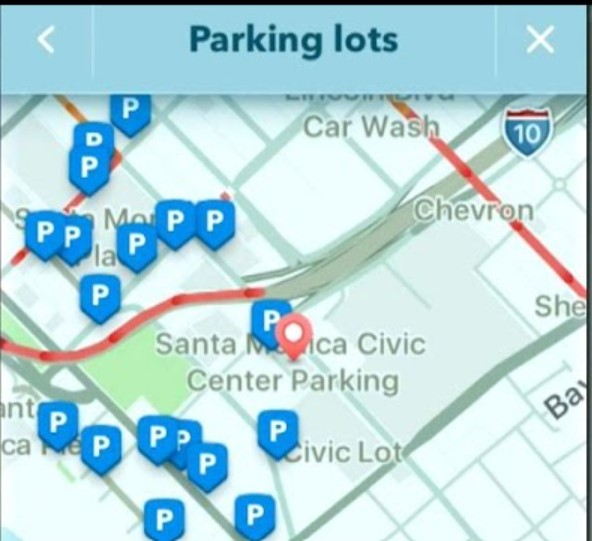
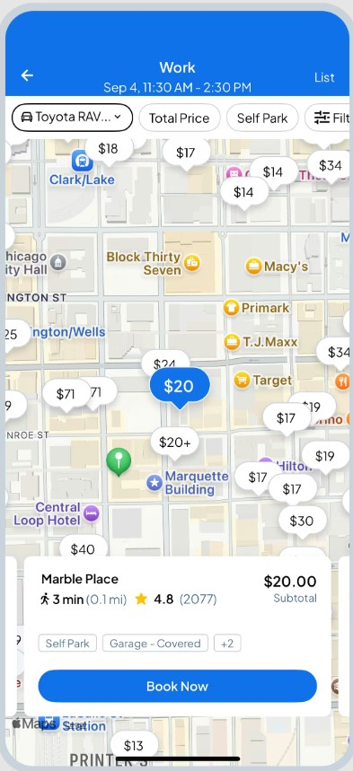
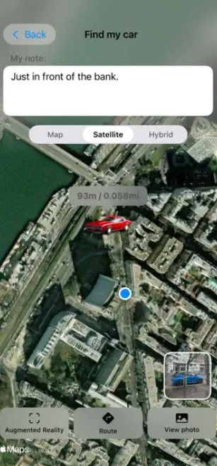
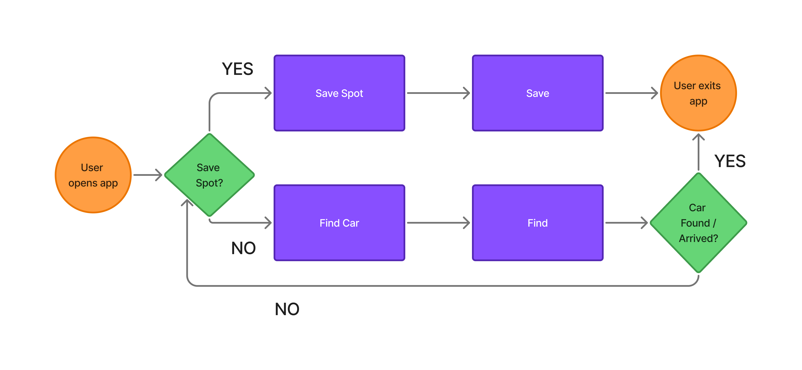
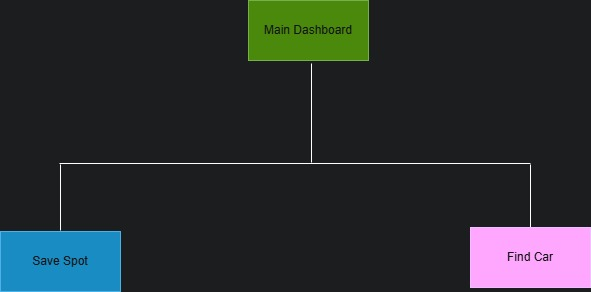
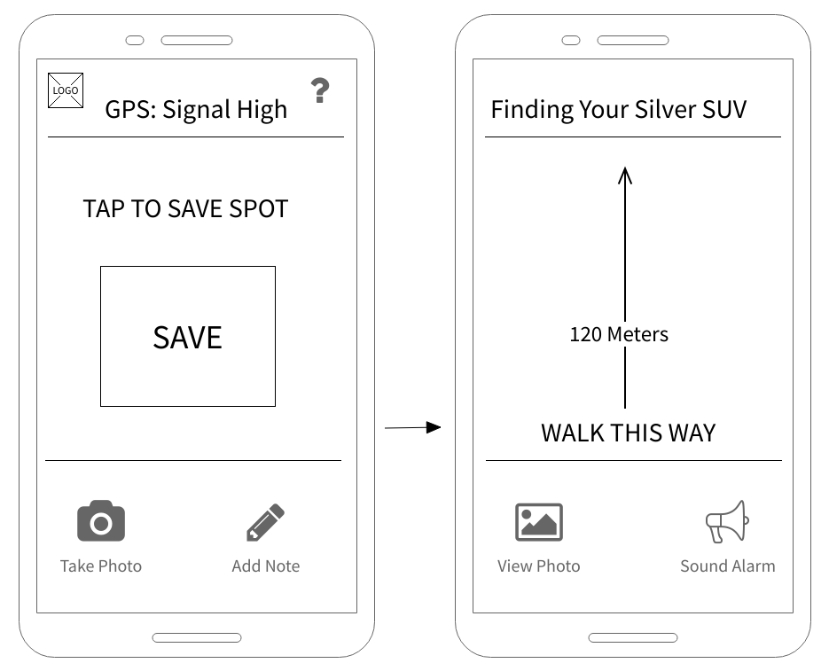
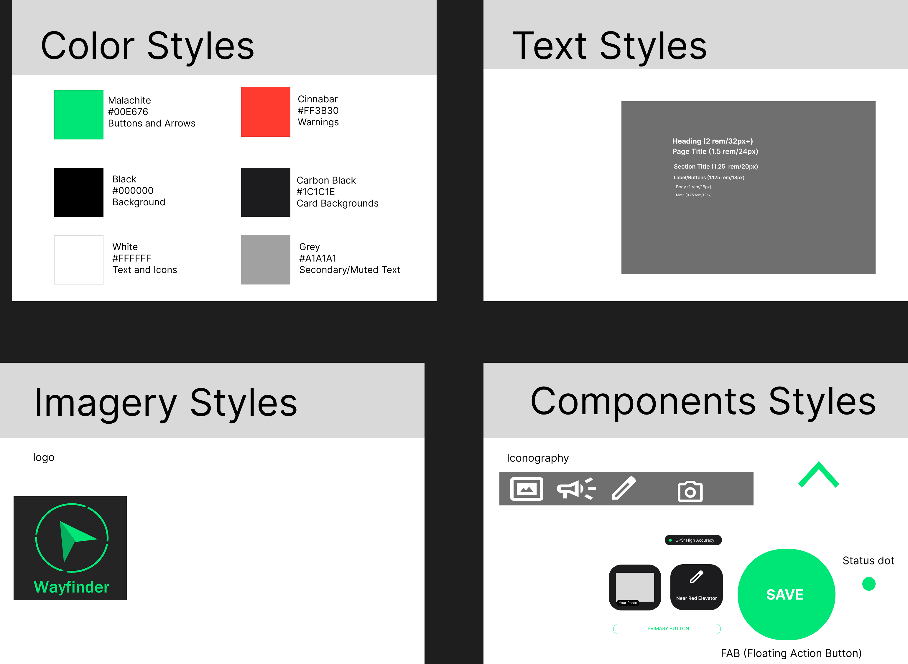
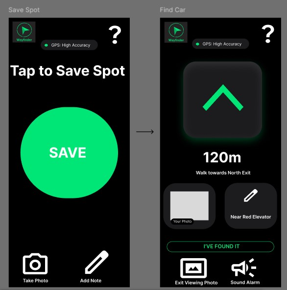

Wayfinder is a minimalist utility-first parking mobile app that mainly focuses on reducing cognitive load for users who are likely distracted, tired, or in a rush.
Large-scale garages create a "visual sameness" that triggers spatial anxiety. Users often forget their level, section, or even which side of the building they entered.
The goal was to design a zero-friction mobile app that requires only two taps: one to save, one to find.
The process for this project consists of the following:
Users often forget their parking spot due to rushing or being visually fatigued in confusing environments. Existing solutions like Google Maps, Apple Maps, and third‑party apps are too complex, inaccurate in garages, or fail without a signal, making users frustrated.
I focused on three key areas:
I identified three primary users:
Across research, users consistently struggled with:
I did a competitive audit on four apps, as these four apps represent the major categories Wayfinder competes with, such as general navigation apps, parking‑focused apps, and single‑purpose car‑locator apps.

Google Maps has a significant amount of features and is familiar to users, but its vast features and cluttered UI cause too much cognitive load.

Waze is ideal for driving, but it is not ideal for post-parking tasks.

SpotHero is not truly a competitor for car-location, only for parking acquisition.

Find My Car is a simple and easy tool, but execution is poor.
The mobile app needed to:
I want to track my car in an area with no signal
I want to find where my car is in the parking garage among hundreds of similar makes and models
The user flow map focuses on illustrating the step‑by‑step path users undergo when using the app, depending on whether they already saved a spot or are arriving at the garage or parking lot.

I designed a clear, scalable sitemap to map out the structure and hierarchy of the mobile app, focusing on hierarchical efficiency, zero-tab navigation, and instant utility to reduce stress and cognitive overload. The app is a stripped-down utility-and-task-focused app, and as a result, there are no hidden menus or deep sub-pages present - it is intentionally minimal.

I explored multiple layout concepts and approaches, such as a map-based layout, a photo-based one, and a compass-based one. Through the data from the research, the direction became clear: The app needed to mirror how people navigate parking and vehicle retrieval and how they themselves respond and act towards those tasks. Based on that concept, I decided the compass-based layout was the best choice for the layout of the app.
Why I rejected a few layouts:
I created low-level wireframes using MockFlow. These wireframes concentrated on large, single-purpose buttons, a compass-style directional indicator, simple icons, and a distance meter using device sensors, for users would likely interact with the app feeling tired, distracted, exhausted, or in a rush. Large, simple buttons and a compass-style direction indicator reduce stress and speed up interactions.

I created several stylesheets to establish the color palette, typography, imagery, and several of the UI elements. The aim was to design an aesthetic with high contrast, heavy weights, and functional colors that worked in a dim parking garage so users wouldn't be blinded by it while reading. The visual design fully utilizes an OLED-friendly black to reduce glare, high contrast accents for visibility, large, thumb-reachable buttons, minimal text, and simple iconography. Typography and spacing were chosen to support quick glances and accessibility.

After some adjustments based on the low-fidelity wireframes, interactive high-fidelity wireframes were created on Figma. The final screens include:

Wayfinder is a high-utility mobile app designed to eliminate "parking amnesia" by reducing the complex task of vehicle retrieval to a zero-friction, two-tap experience. Developed for high-stress, low-connectivity environments like airport garages and urban decks, the app utilizes an offline-first app that bypasses traditional GPS limitations through on-device sensor tracking. By replacing cluttered map interfaces with high-contrast directional guidance and "one-tap" visual anchors, Wayfinder successfully minimizes cognitive load and spatial anxiety, transforming a frustrating daily hurdle into a seamless, reliable moment of digital relief.
Key Takeaways:
This project laid the groundwork for a more functional site. The next phase will include: